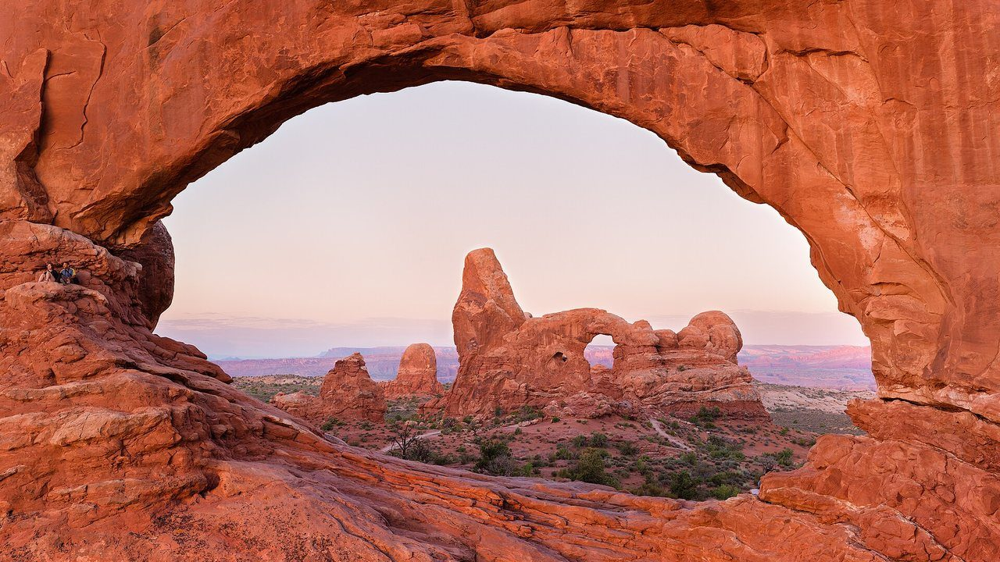

Race, Moab Slickrock

Behind
Best +0:01
371W
Target 418 W-47 W
- Cadence
- 87rpm
- Heart
- 140bpm
- Speed
- 26.5km/h
Recover10 of 17
1:20
Next: · 1:30 at level 24
-2.0%
145 m climbed
6.52 km
10
Resistance / 32
Solo races your best-time ghost: position reads Ahead or Behind, and solo alone gets a Pause button. Frozen at 15:10.